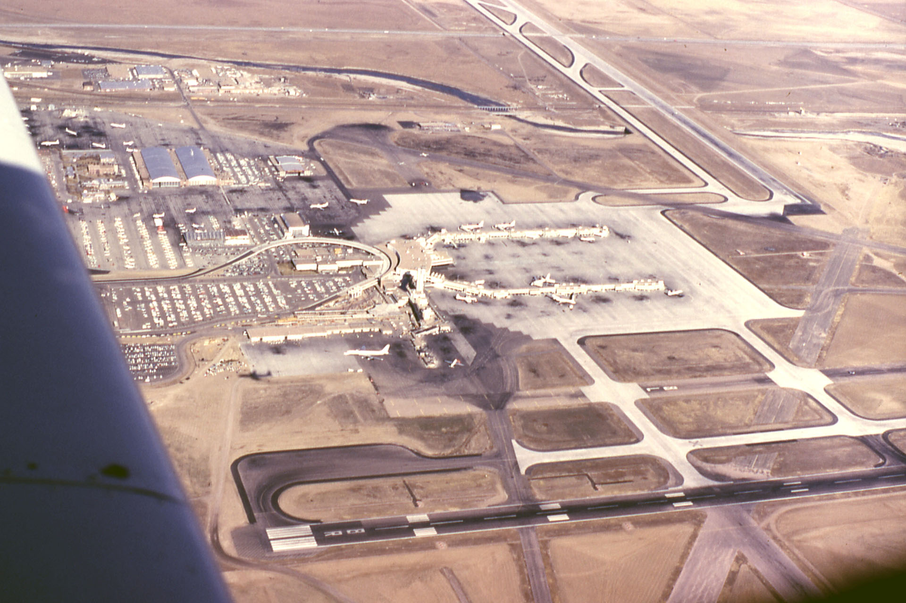
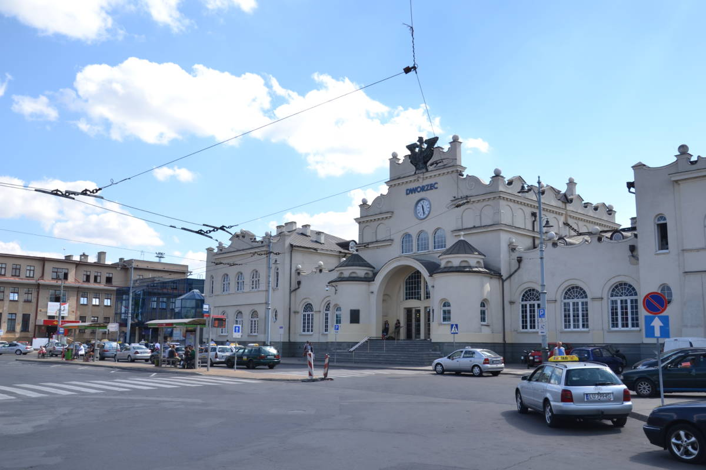

Lotnisko
Witamy na stronie Lotniska PKP Lublin Główny
Nasze Lotnisko:

Mamy:
Helikoptery
Samoloty
pasażerskie
Transportowe
Szkoleniowe
Wojskowe
Wojskowe? Tak! Nasze lotnisko jest złączonę i zintegrowane z Bazą Wojskową w Lublinie!
Mamy też bardzo zróznowane sposoby na dostanie się na naszę Lotnisko!
Taxi
Autobusy
Samochody
Rowery
Dzięki Dworcu Kolejowego PKP Lublin Główny, Możes się to nasz dostać nawet Pociągiem!

Odloty
Samolot
Dokąd
Kiedy
Opóznienia
Cessna 208B Grand Caravan
Lądowisko Chrcynno
14:05
2 lata
Ił-62M SP-LBG „Tadeusz Kościuszko”
Nowy Jork
11:12
42 lata
PLL LOT Lockheed Electra
Warszawa
16:43
88 lata